Get started
Access Permission Sets
Use of Latvian Cash Management Localization requires the following standard permission sets to be assigned for the user:
- D365 JOURNALS, EDIT
- D365 JOURNALS, POST
Role Center
In order to use Latvian Cash Management Localization, no specific role center is required, because the functionality can be accessed via the search pane, whereas printout buttons are embedded inside the ribbon under the tab ACTIONS.
Configuration Package Import
Basic necessary system setup for the use of Latvian Cash Management Localization is created, when the configuration package LVI.LVI.CASH is applied.
- Click on the button Search...
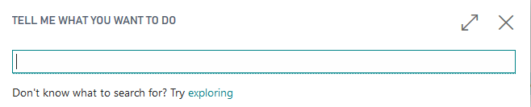
- Type Configuration packages and select the corresponding list:

- Select the LVI.LVI.CASH package from the list of Configuration Packages and press the buttons Process - Apply Package.
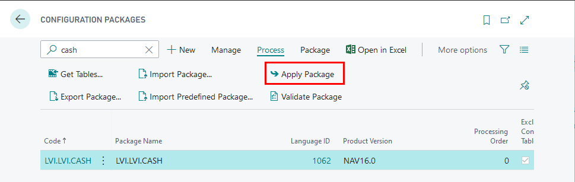
Configuration package ensures the following information:
- General Journal Template (KASESGRAM)
- Source Code (CASHBOOK)
- General Journal Batch (IENEMUMI for cash Incomes, IZDEVUMI for cash payments)
- Source Code Setup
- No.Series (KIO, KZO)
- No.Series Lines (for KIO, KZO)
Pre-requisites
The following information should be completed after importing the configuration package:
Create employee card for the employee who is responsible for petty cash
Complete the company information by entering:
- Name
- Registration No.
Setup
Source Code and Source Code Setup
- To create a new Source code, click on the button Search...
- Type Source codes and select the corresponding list:
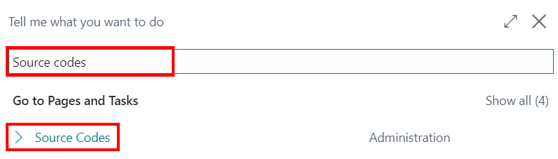
- Create a new source code by filling in the fields Code (1) and Description (2).

Close the list Source Codes. The code that was just created should be added in the Source Code Setup.
Click on the button Search...
Type Source code setup and select the corresponding list:
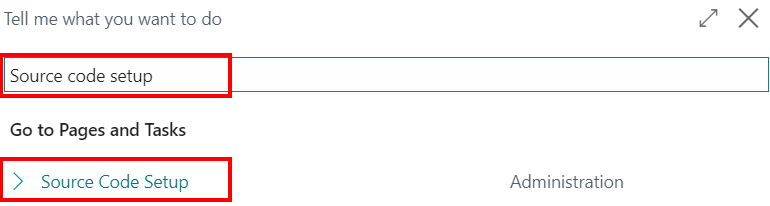
- In the tab General, add the newly created source code in the field Cash Book Journal.
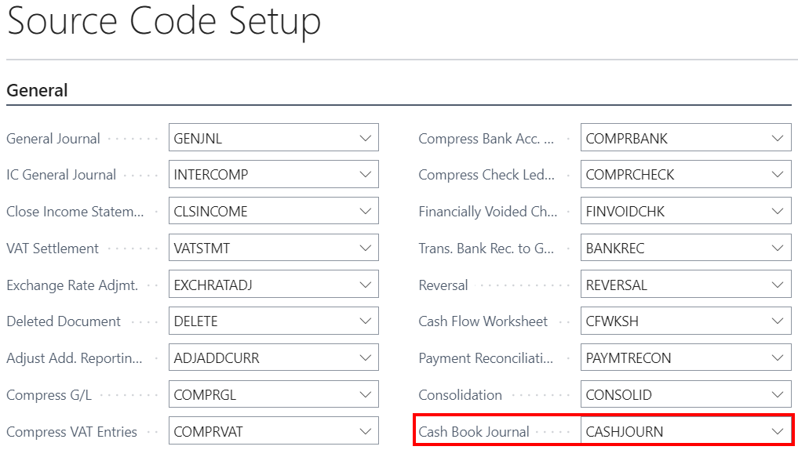
Bank Account Posting Groups
- Click on the button Search...
- Enter Bank Account Posting Groups and then choose the related link.
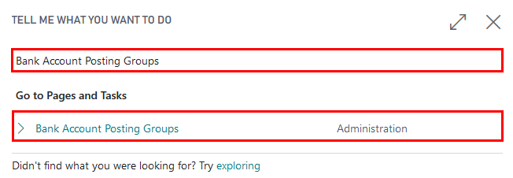
- Press New to create a new bank account posting group.
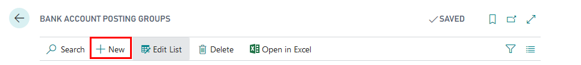
- Enter the code for the group that you want to set up in the Code field, for instance, "KASE_EUR". The code should be descriptive. You can use both numbers and letters. In the G/L Bank Account No. field, enter the desired G/L account.
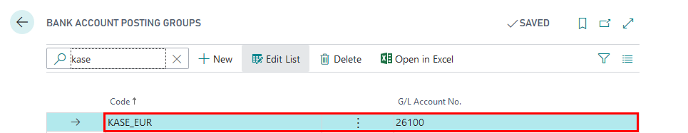
Close the list Bank Account Posting Groups.
Bank Account Cards
Complete the Bank Account information (per each bank account separately).
- Click on the button Search...
- Type Bank Accounts and select the corresponding list from the Pages and Tasks.
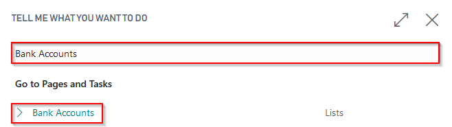
- Press New in order to create a new Bank Account Card for each cash desk.

- Complete the Bank Account Card information by adding the Name and Address details. The Number (No.) is added automatically from the number series list, but if necessary it can be also created manually.
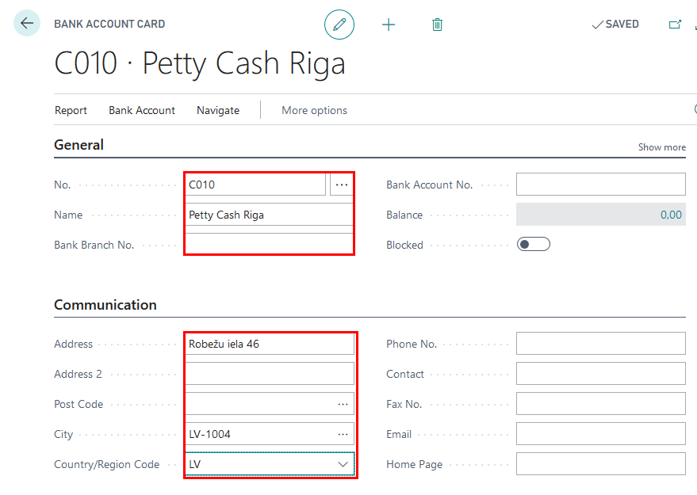
- Complete the Bank Account Card information with the Currency Code (if the currency differs from the local currency) and Bank Account Posting Group (specifies the asset account for cash transactions).
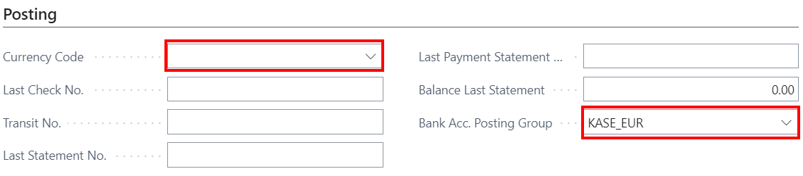
Tip
If more than one currency is necessary, a separate cash desk for each of them should be created!
- Complete the Bank Account Card information with the following information:
- Account Type - select Cash Desk
- Cashier No. - select an employee from the List of Employees, who is responsible for petty cash operations for this location
- Accountant No. - select an employee from the List of Employees, who holds the position of an accountant
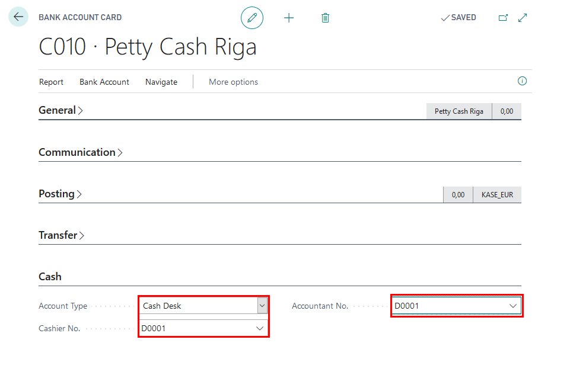
Number Series
To automatically add the numbers to the Cash Income Orders and Cash Payment Orders, the number series should be created.
- Click on the button Search...
- Type No. Series and select the corresponding list from the Pages and Tasks.
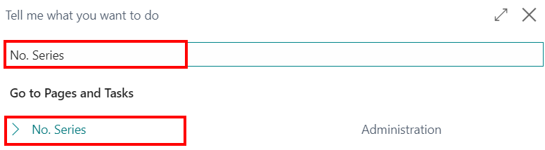
- Click on New.
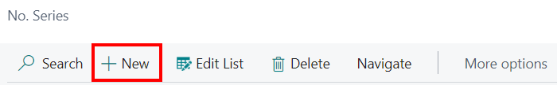
- Fill in the fields Code (1), Description (2), and click on the field Starting No. (3). A new window will open; it will be possible to choose the appropriate format for the new number series.
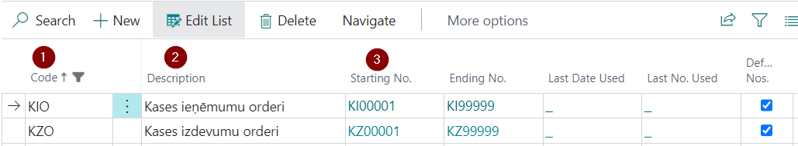
- In the No. Series Lines menu, it is possible to choose the Starting Date for the number series, Starting No., Ending No. and other settings.
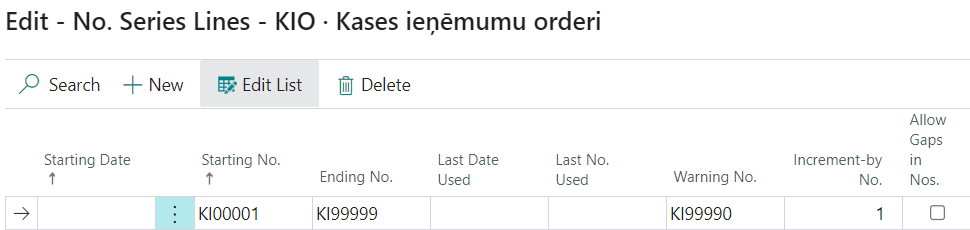
- If it is required that the numbers are assigned automatically, indicate it in the field Default Nos.
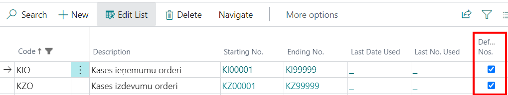
Cash Book Journal batches
Cash Income Orders and Cash Payment Orders require to have separate Cash Book Journal batches.
- Click on the button Search...
- Type Cash Book Journals and select the corresponding task.

- Open the tab Batch Name.

- RCreate two Cash Book Journal Batches - one for Cash Income Orders (for instance, KIO) and one for Cash Payment Orders (for instance, KZO).
Mandatory fields:
- Name (1)
- Description (2)
- Bal. Account Type (3) - Bank Account
- Bal. Account No. (4) - KASE
- No. Series
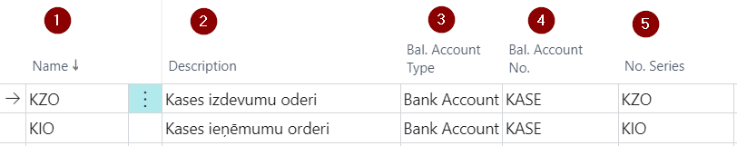
Tip
If the company has more than one cash desk, a separate journal template can be created for each one of them (General Journal Templates). For each cash desk the necessary batches can be added (Related - Template - Batches).
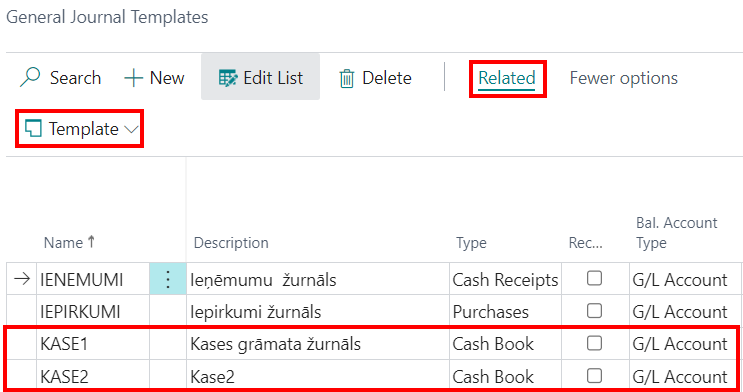
How to use
How to use: Cash Book Journal
LV Cash Book Journal is used for entering, posting and booking Cash Income Orders and Cash Payment Orders. Choose the appropriate journal batch. Fill the journal:
- Posting date - date when the cash is received or issued
- Document Type -
- Payment - if the cash is received from a customer or paid to a supplier
- Refund - if the cash is returned to a customer or received back from a supplier
- Document No. - sequential number of the Cash Income/Payment Order, filled in automatically if a number series was added for the batch
- Account Type -
- Use Customer to register the petty cash payments received from the customers or refunds given to them; the transaction will appear in Customer Ledger Entries.
- Use Vendor to register the petty cash payments to the vendors or refunds received from them; the transaction will appear in Customer Ledger Entries.
- Use G/L Account to register the Cash-In-Transit, miscellaneous expenses, and others
- Account No. - select a corresponding Customer/Vendor/G/L account from the list, based on the Account Type selected in the previous step
- Description - define the description to be displayed in the ash Income/Payment Orders
- Employee No. - if the cash is received from or issued to an employee, select the corresponding employee from the List Of Employees
- Person Identity No. - fill in the personal identity No.
- Attachment Description - add additional information about the document that will be attached to the Cash Income/Payment Order (if there is any)
- Debit Amount
- Credit Amount
- Amount-
- Bal.Account Type - Bank Account (Cash Desk), fills in automatically, if it is previously added to the batch
- Bal. Account No. - number of Cash Desk, fills in automatically, if it is previously added to the batch
How to use: Create Cash Payment Order
Latvian Cash Management Localization ensures possibility to create Cash Payment Orders in Dynamics 365 Business Central and print them, in order to be compliant with Latvia local legislation requirements.
Purpose: Petty Cash Payment Orders require to be registered in the system with ability to provide a correct printout per transaction requested.
Available for printing from: reports can be printed from Cash Book Journals. Particular Print button Cash Payment Order is located in the Ribbon under the TAB Process. 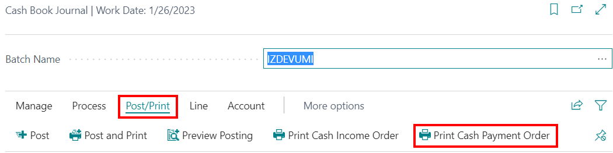
Also Cash Payment Order can be printed for a posted transaction, using report Cash Payment Order from Reports and Analysis with a filter of Bank Ledger Entry. 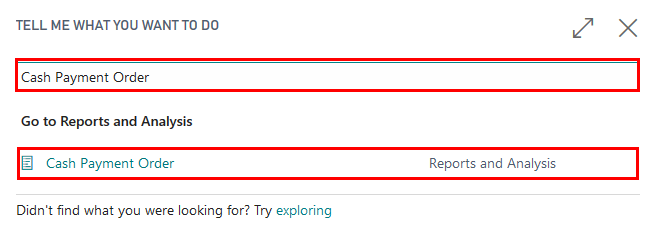
Pre-requisites: Cashier and Accountant need to be specified in Bank Account Card; Bank Account Card should have correct Bank Posting Group assigned; fields Person Identity No. and Person Identity Doc. No. fields are mandatory to be completed. In Cash Book Journal batch IZDEVUMI a line needs to be created:
- Document Type: Payment
- Amount: Positive 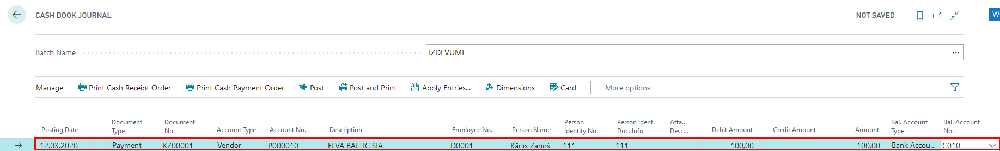
Printing Options: the following printing options are available for this printout:
- Print Received Information in words – when selected, the amount in words is printed next to section Received of the report
Also a filter on Gen. Journal Line can be applied, when creating the report from Cash Book Journal. 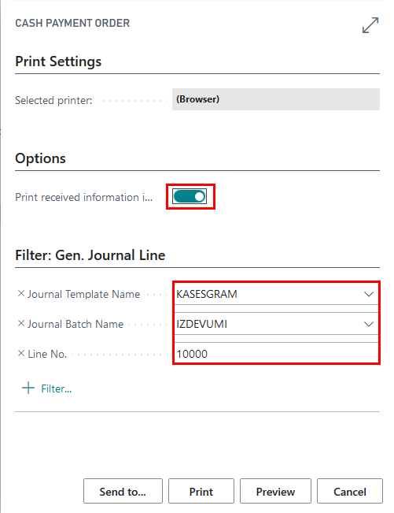
When the printing options are selected, it is possible to use standard Send To…, Print, Preview functions. 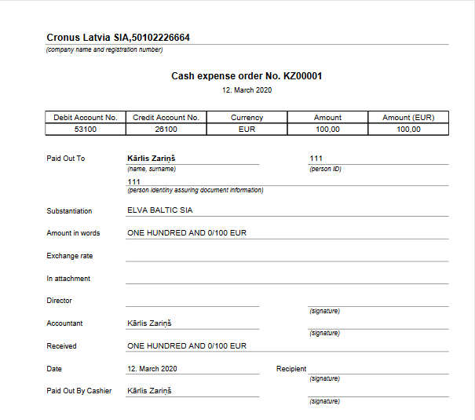
How to use: Create Cash Income Order
Latvian Cash Management Localization ensures possibility to create Cash Income Orders in Dynamics 365 Business Central and print them, in order to be compliant with Latvia local legislation requirements.
Purpose: Petty Cash Income Orders require to be registered in the system with ability to provide a correct printout per transaction requested.
Available for printing from: reports can be printed from Cash Book Journals. Particular Print button Cash Income Order is located in the Ribbon under the TAB Process. Also Cash Income Order can be printed for a posted transaction, using report Cash Income Order from Reports and Analysis.
Pre-requisites: Cashier and Accountant need to be specified in Bank Account Card; Bank Account Card should have correct Bank Posting Group assigned; fields Person Identity No. and Person Identity Doc. No. fields are mandatory to be completed. In Cash Book Journal batch IENEMUMI a line needs to be created
- Document Type: Payment
- Amount: Negative
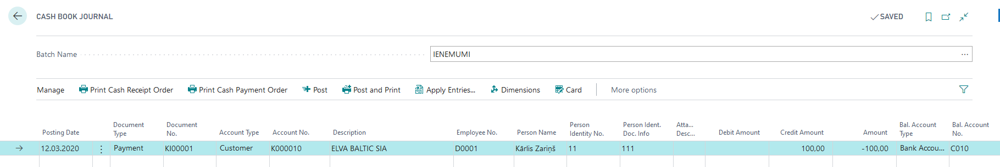
Output Options: the following printing options are available for this printout- not available. A filter on Gen. Journal Line can be applied, when creating the report from Cash Book Journal. 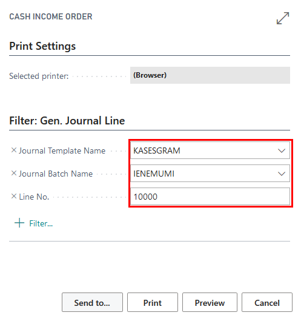
When the printing options are selected, it is possible to use standard Send To…, Print, Preview functions.

How to use: Print Cash Book
Latvian Cash Management Localization ensures possibility to register Cash Income Orders and Cash Payment Orders in Dynamics 365 Business Central and at the end of the period show all particular petty cash transactions in one report- Cash Book in order to be compliant with Latvia local legislation requirements.
Purpose: Cash Book report shows all petty cash transactions per period.
Available for printing from: reports can be printed from Cash Book Journals. Particular Print button Cash Payment Order is located in the Ribbon under the TAB Process.
Available for printing from: Cash Book can be printed for a posted transactions, using report Book from Reports and Analysis.

Pre-requisites: Bank Account used for Petty Cash has Cash Income or Cash Payment Orders posted in specific selected period.
Output Options: the following printing options are available for this printout.
- Report No. – enter a specific number that shall appear on the Cash Book printout A filter on Gen. Journal Line can be applied, when creating the report from Cash Book Journal.
- No. - select bank account with type Cash Desk
- Date filter - enter period per which the Cash Book is being prepared
When the printing options are selected, it is possible to use standard Send To…, Print, Preview functions.
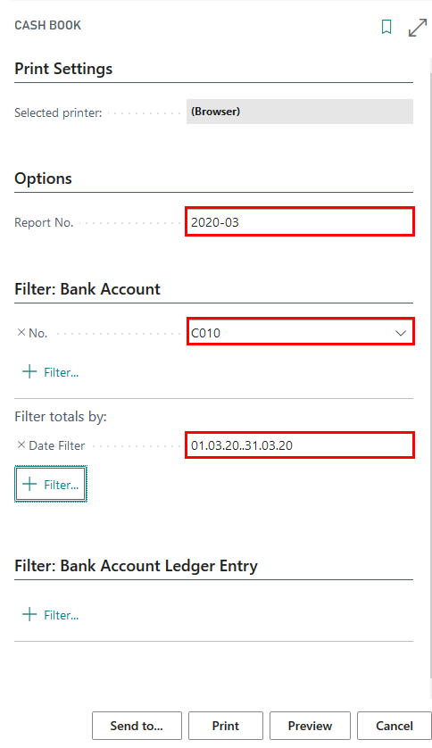 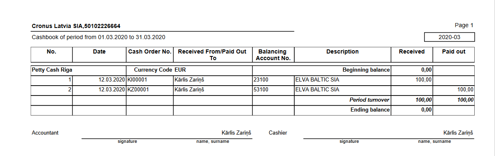